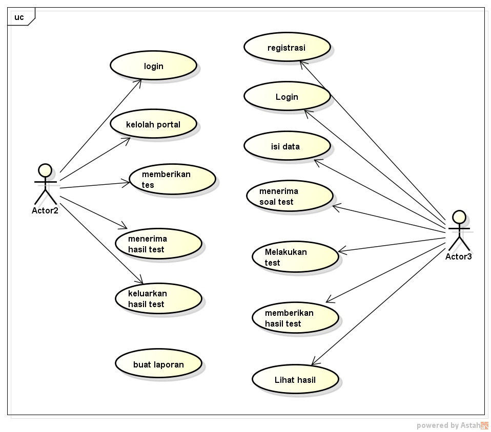

Nim = 1811500068
Nama = Marinus Ndruru
Kelompok = TI6J
Hasil saya menyadur:
2).Use Case Diagram merupakna sebuah sistem dengan model UML diagram yang digunakan untuk pengembangan suatu sistem sesuai dengan kebutuhan.
3).Dengan di buatnya use case digram terlebih dahulu pengembangan sistem lebih mudah.
4).Melalui use case diagram bisa diketuhai fungsi-fungsi apa saja yang akan ada pada sistem.
5).Melalui use case diagram mudah di ketahui apa saja interaksi aktor dengan sistem.
use case diagram penerimaan mahasiswa baru
1.Petugas pendaftaran
2.Dan Calon Siswa atau Mahasiswa
Penjelasan :
1. Aktor petugas pendaftaran memiliki beberapa tugas di antaranya :
• Melakukan login ke portal atau sistem
• Mengelola portal atau sistem
• Memberikan tes kepada calon siswa atau mahasiswa
• Menerima hasil tes
• Menerbitkan hasil tes
• Dan membuat laporan
2. aktor calon siswa atau mahasiswa memiliki tugas :
• Melakukan registrasi
• Kemudian login
• Mengisi data lengkap
• Menerima soal tes
• Melakukan tes
• Dan melihat hasil tes

download file astah download